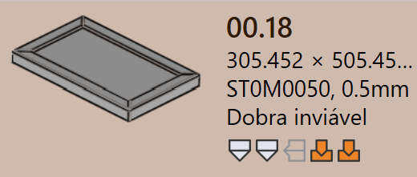
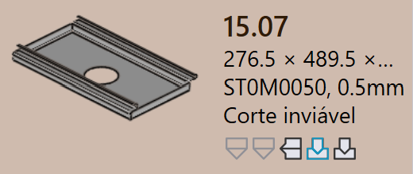
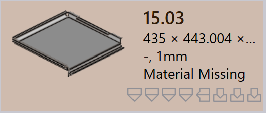
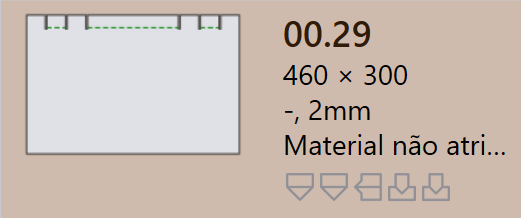
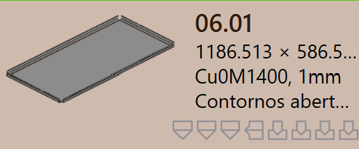
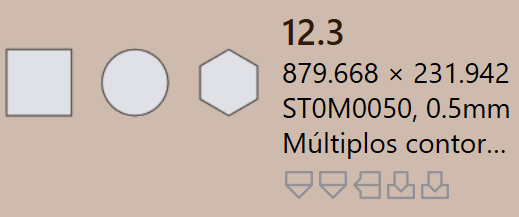
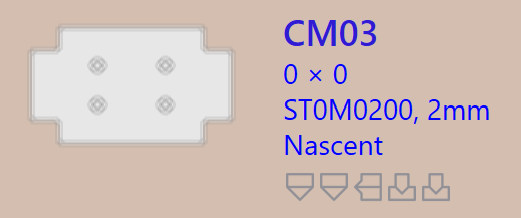
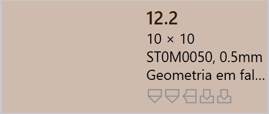

Status da peça
Quando uma peça é importada no TruSmartCAM, a tecnologia de chapa metálica relevante é automaticamente processada para a peça. Como parte deste processo, o TruSmartCAM executa
O estado da peça é exibido diretamente no tile da peça, abaixo do nome da peça, indicando a condição de validação atual da peça.
Os tipos de estado da peça descrevem as diferentes condições em que uma peça pode estar como resultado de verificações de validação em nível de peça. Esses estados indicam problemas relacionados ao projeto, material ou geometria da peça e devem ser resolvidos antes que o ferramental possa prosseguir.
Erros de peça
Um erro CAD (Computer-Aided Design) ocorre quando há um problema no projeto ou geometria da peça, como contornos abertos, geometria ausente ou material não atribuído. Esses erros se originam do modelo CAD e impedem que a peça seja processada posteriormente.
-
Dobra inviável : O TruSmartCAM tenta automaticamente encontrar um método de dobra válido para a peça. Se não conseguir encontrar nenhuma solução de dobra adequada, a peça é marcada como bend infeasible.
-
Cut infeasible : Se os avisos de dobra forem ignorados, o TruSmartCAM tenta então encontrar um método de corte. Se nenhuma solução de corte válida for encontrada, a peça é marcada como cut infeasible.
 
Erros de material
-
O material não existe : A espessura da peça é lida do modelo CAD e correspondida com os materiais no banco de dados de Raw Material do TruSmartCAM. Se nenhum material correspondente for encontrado, a peça é marcada com um erro O material não existe.
-
Material não atribuído : Se o modelo CAD não tiver um campo de mapeamento de material ou se o campo estiver vazio, o TruSmartCAM não pode atribuir um material. Neste caso, a peça é marcada com um erro Material não atribuído.
 
Erros de geometria
-
Contornos abertos detectados : O arquivo CAD possui uma ou mais formas abertas (incompletas), o que impede o ferramental adequado.
-
Múltiplos contornos externos detectados : O arquivo CAD possui mais de um loop externo fechado, o que cria confusão durante o processamento.
-
Erro Nascent : Quando uma peça é carregada de uma planilha (CSV ou XLSX), mas o arquivo CAD real está ausente, ela é marcada como peça nascent.
-
Geometria em falta : O modelo CAD não possui geometria válida ou a geometria é ilegível, tornando-o inutilizável para ferramental.
 
 